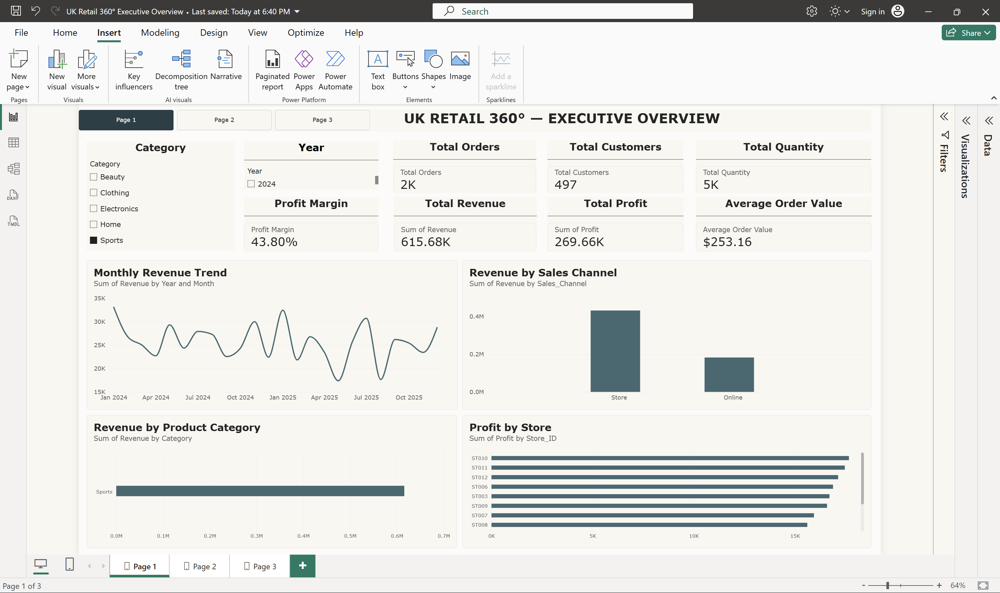
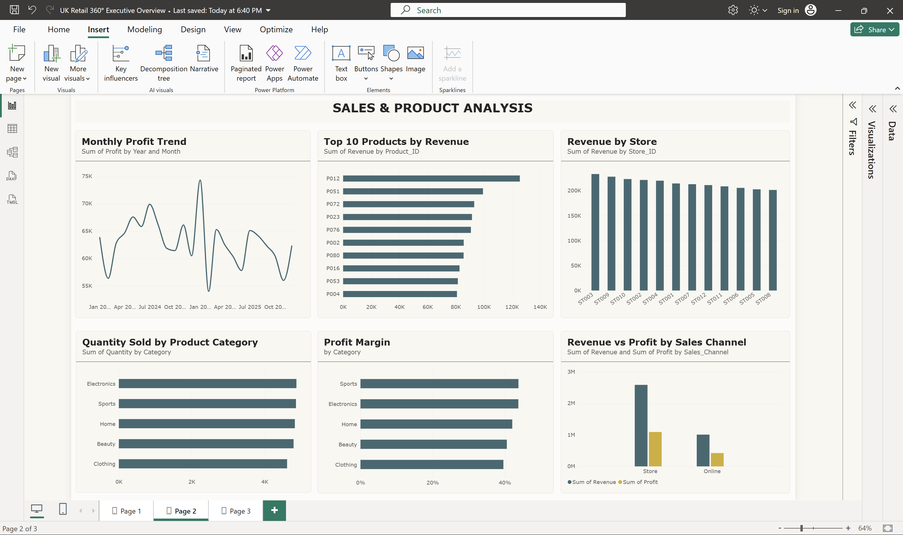
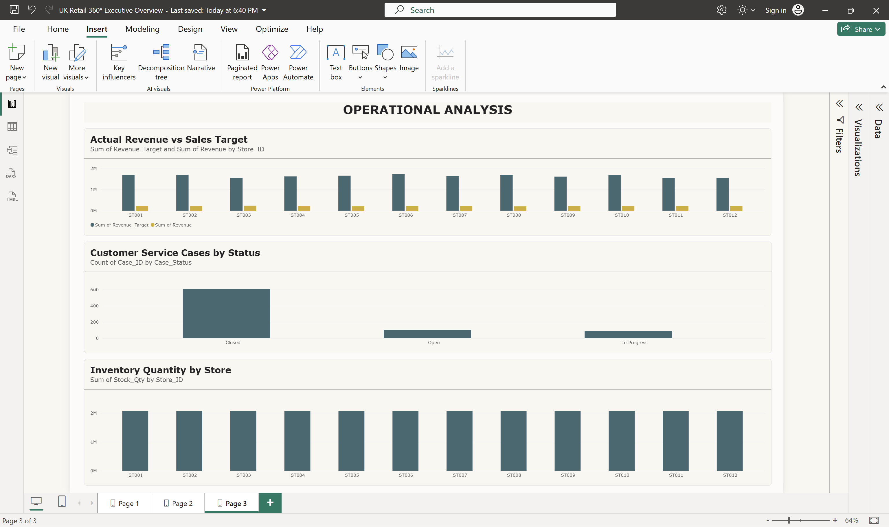
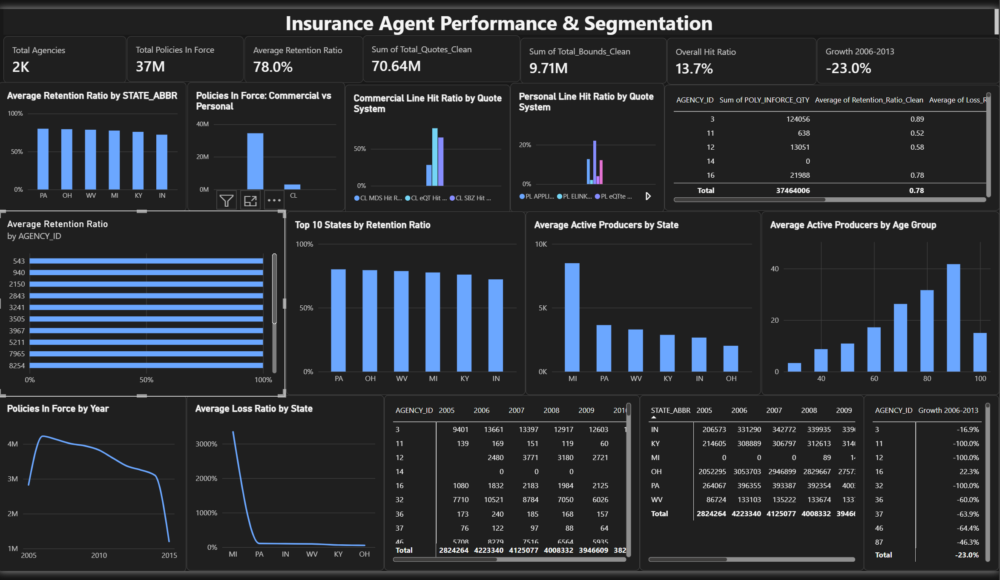

Data Analyst | BI Analyst | MSc Data Science
I am a Data Analyst and MSc Data Science graduate passionate about transforming data into meaningful business insights. I work with SQL, Power BI, Tableau, Python, and Excel to analyse data and support data-driven decision-making.
View My Projects View My CVI am an MSc Data Science graduate with an interest in Data Analytics and Business Intelligence.
I enjoy analysing datasets, identifying trends, creating dashboards, and communicating insights that help businesses make better decisions.
An end-to-end business intelligence project using SQL Server 2025, T-SQL, Power BI, and DAX to analyse retail sales, profitability, product performance, and operations.
Total Revenue: £3.59M
Total Profit: £1.51M
Profit Margin: 42.1%



Tools: SQL Server 2025, T-SQL, Power BI, DAX
An interactive Power BI dashboard analysing insurance agent performance and business metrics.

Tools: Power BI, DAX, Data Visualisation
A Tableau project exploring COVID-19 trends across India through interactive data visualisations.
Tools: Tableau, Data Analysis
View TableauUnited Kingdom